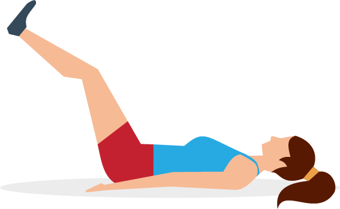

- Make sure your bladder is empty
- Lie on the back with knees bent and apart
- Contract your pelvic floor muscles for 3 to 5 seconds.
- Relax for 3 to 5 seconds.
- Repeat the contract/relax cycle 10 times.
- Don't contract your abdominal, leg, or buttock muscles
- Gradually increase the length of contractions and relaxations.
- Try to do at least 30 to 40 Kegel exercises every day